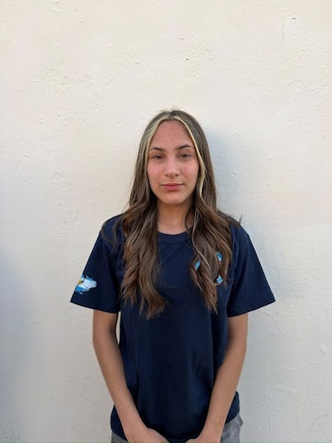

Interfaces que se sienten
Interfaces web responsivas con animaciones cuidadas, HTML semántico y una identidad visual que no se olvida.
Técnica en Programación Argentina
Coca-Cola bien fría ✦ dulces caseros ✦ código con azúcar
Tengo 18 años y convierto ideas en interfaces que se sienten vivas, con el brillo de una Coca recién abierta. Soy creativa, me encanta estar acompañada y siempre estoy para los demás: si hay un plan, me sumo. Voy con energía a cada proyecto y cuido los detalles para que el resultado se recuerde.
Técnica en Programación Argentina
Perfil profesional · 2026
Soy Arrieta Guadalupe, Técnica en Programación. Trabajo en desarrollo web y bases de datos, con atención al código legible, la adaptación a distintos dispositivos y la resolución clara de problemas. Me interesa comprender cada requerimiento antes de implementar y colaborar con el equipo durante todo el proceso.
Arrieta Guadalupe · Técnica en Programación
Una presentación cuidada
Me presento con el mismo recorrido y la misma información, pero con un tono más sereno. Dedico atención a cada proyecto, a la claridad de la lógica y al detalle de la experiencia final. Escucho primero, ordeno después y construyo con criterio.
MUNDO GUADA · Técnica en Programación
Hola, soy Guada · jugadora 01
Tengo 18 años y hago páginas, lógica y bases de datos. Me gusta que las cosas funcionen y que se vean lindas. Si hay un problema, lo pienso, lo pruebo y lo resuelvo. Siempre estoy para los demás y me sumo a los planes con ganas.
guada@portafolio:~$ ¿quién soy?
Técnica en Programación · interfaz y datos
Arrieta Guadalupe, 18. Construyo interfaces responsive, implemento lógica de interacción y organizo datos en MySQL. Flujo: entender el problema, diseñar la solución, escribir código legible y verificarlo. Abierta a proyectos y colaboraciones.
Elegí tu combo cada golosina te lleva a una sección
MUNDO ARRIETA · Hola, soy
Técnica en Programación. Hago interfaces, lógica y datos. Todo tranqui, todo claro y siempre con ganas de jugar en equipo.
Insertá moneda elegí tu nivel

Técnica en Programación
Una presentación directa sin ruido
Técnica en Programación
Detalle, criterio y buen gustoCada detalle elegido a mano
const guada = {
rol: "Técnica en Programación",
stack: ["HTML", "CSS", "JS", "SQL"],
superpoder: "resolver problemas"
};
function saludar() {
return "Hola, soy Arrieta Guadalupe";
}$ elegí un módulo para explorar
01 / Ingredientes
Escucho, me adapto y construyo con los demás: entiendo el problema, diseño la lógica y cuido cada detalle del resultado, como quien elige el mejor dulce de la vidriera.
Siempre lista para sumarme, con esa ansiedad buena. Coca bien fría, lógica bien medida y ganas de estar acompañada.
Soy Arrieta Guadalupe, Técnica en Programación. Creativa de nacimiento, ansiosa por crear y siempre con ganas de estar acompañada: me sumo a cada plan y hago lo posible porque quienes me rodean estén bien.
Me mueve la lógica, sí, pero también la gente. Disfruto entender un problema, preguntar hasta que queda claro y encontrar la forma de que todo funcione. Trabajo con detalle y con esa ansiedad buena que me empuja a terminar las cosas.
// Formación
01 / Perfil
Presentación profesional: formación, áreas de trabajo y datos de contacto en un formato directo y fácil de recorrer.
Técnica en Programación · Desarrollo web y bases de datos
Soy Arrieta Guadalupe, Técnica en Programación. Trabajo con foco en desarrollo web y bases de datos, priorizando código legible, diseño adaptable y soluciones claras.
Me interesa entender el problema antes de implementar, conversar con el equipo y entregar resultados que se puedan mantener en el tiempo.
01 / Perfil
Una presentación cuidada, con la misma trayectoria y las mismas ideas, expresadas con un tono más formal.
Perfil · Arrieta Guadalupe
La claridad también es una forma de elegancia.
Me presento como Técnica en Programación, con formación en desarrollo de software y bases de datos. Mi trabajo combina una mirada analítica con especial atención por el detalle y la experiencia de quien utiliza cada solución.
Escucho antes de proponer, ordeno antes de construir y cuido que cada entrega sea comprensible, ordenada y sostenible. Me desenvuelvo en equipo y valoro especialmente la comunicación clara.
01 / Jugador
Acá está la info de siempre, pero contada como arranque de nivel: simple, tranqui y con datos claros.
JUGADORA 01 · MUNDO GUADA
Soy Técnica en Programación. Me gusta entender el problema, jugar con la lógica y hacer que todo funcione. Si hay un plan, me sumo; si hay un equipo, mejor todavía.
Estudio desarrollo de software y bases de datos. Aprendí HTML, CSS, JavaScript, SQL y MySQL a fuerza de probar, preguntar y volver a intentar.
01 / presentacion.md
El mismo perfil en formato archivo: directo, técnico y sin vueltas.
Técnica en Programación · Argentina / GMT-3 · 18 años
Construyo interfaces responsive, resuelvo lógica de interacción y organizo datos en MySQL. Prefiero primero entender el problema, después escribir código claro y recién entonces optimizar.
Formación: Técnica en Programación; aprendizaje autodidacta de HTML, CSS, JavaScript, SQL y MySQL.
02 / La carta
De la idea al código, con foco en claridad, orden y detalle. Como una buena receta: medida justa, mucho amor y una Coca bien fría.
Interfaces web responsivas con animaciones cuidadas, HTML semántico y una identidad visual que no se olvida.
Secuencias de código y funcionalidades que resuelven problemas reales: interacción, validaciones y automatización de tareas simples.
Bases de datos MySQL, consultas SQL claras y estructuras simples para guardar y encontrar información sin complicaciones.
02 / Servicios
Tres áreas concretas: interfaces, lógica de aplicación y gestión de datos.
Implementación de interfaces web responsivas con HTML semántico, CSS organizado y animaciones contenidas.
Desarrollo de interacciones, validaciones y automatizaciones que responden a necesidades concretas.
Diseño y consulta de estructuras en MySQL, con sentencias SQL claras y fáciles de mantener.
02 / Ámbitos
Cada disciplina se presenta en su propia tarjeta, con detalle y sin ornamentos innecesarios.
Compongo interfaces web responsivas con semántica cuidada, movimiento mesurado y una identidad visual coherente.
Construyo interacciones y validaciones que resuelven necesidades reales sin añadir complejidad innecesaria.
Ordeno la información en MySQL y formulo consultas SQL claras, legibles y sostenibles.
02 / Poderes
Tres cosas que sé hacer, explicadas simple. Sin palabras raras: se ve y se entiende.
Páginas que se ven bien en cualquier pantalla, con movimiento y detalles que hacen el nivel más lindo.
Botones, validaciones y cositas que funcionan. Si algo se puede automatizar, lo automatizo.
Guardo y encuentro info con MySQL y consultas SQL simples. Nada de enredos.
02 / módulos
Tres módulos con entrada y salida claras. Código legible, resultados predecibles.
interfaz.tsInterfaz adaptable · semántica + estilos + movimiento contenido. Salida: interfaces que se adaptan solas. [HTML, CSS, JS, Responsive]
logica.tsInteracción, validaciones y automatizaciones. Entrada: problema. Salida: comportamiento predecible. [JS, Lógica, Validaciones]
base-de-datos.sqlEsquemas simples y consultas claras en MySQL. Sin magia oculta: todo se puede leer. [SQL, MySQL, Consultas, Datos]
03 / Extras y golosinas
Los ingredientes que uso para construir: tecnología, orden y un toque de azúcar. Tocá cualquier etiqueta para verla en el frasco.
// Extras dulces (habilidades blandas)
03 / Habilidades
Tecnologías organizadas por área, con un lector simple para revisar cada una. También se incluyen las habilidades blandas.
Selección: HTML5
Habilidades blandas
Selección: Pensamiento analítico
03 / Competencias
Una selección de herramientas y competencias en etiquetas fijas, sin movimiento y con el mismo contenido.
HTML5
Pensamiento analítico
03 / Objetos
Tres bolsos de ítems. Tocá uno para ver qué lleva arriba. Fácil, como elegir una mejora.
HTML5
Pensamiento analítico
03 / habilidades
Las mismas tecnologías y habilidades blandas, listas como dependencias y salida de comando.
Herramientas: 12 elementos · 3 categorías
HTML5
Habilidades personales: 6 valores
Pensamiento analítico
04 / El menú principal
Los nueve proyectos reales, todos visibles de una vez, con el espíritu de la versión Juegos.
04 / Proyectos
Los nueve desarrollos reales, todos visibles de una vez, con el espíritu de la versión Juegos.
04 / Proyectos
Cada proyecto aparece por separado, con un fundido sereno y un índice discreto para recorrerlos.
04 / Niveles
Nueve proyectos = nueve niveles. Arrastrá el mundo, usá las flechas o tocá los bloques.
04 / proyectos
Nueve proyectos reales, uno por archivo. Navegá con las flechas o con los puntos.
05 / Hacé tu pedido
Estoy abierta a proyectos, prácticas, colaboraciones o simplemente a una buena charla sobre código, dulces y Coca-Cola. Respondo rápido y con muchas ideas.
Hora local · --:--:-- GMT-3
// gracias por llegar hasta acá — ahora escribime ↓
05 / Contacto
Para consultas, proyectos o colaboraciones, puede escribirme por los canales que se indican a continuación.
Hora local · --:--:-- GMT-3
05 / Correspondencia
Acepto con gusto propuestas, proyectos y colaboraciones. Toda comunicación será atendida con atención y prontitud.
Hora local · --:--:-- GMT-3
Estimada persona:
Gracias por dedicar tiempo a este portafolio. Si desea conversar sobre un proyecto, una colaboración o una oportunidad, yo le agradecería escribirme. Respondo personalmente cada mensaje.
Con atención,
Arrieta Guadalupe
05 / Contacto
Mandame un mensaje para proyectos, prácticas o charlar de código. Respondo rápido y con ganas.
Hora local · --:--:-- GMT-3
05 / contacto
Abierto a proyectos, prácticas y colaboraciones. Elegí un canal y escribime.
Hora local · --:--:-- GMT-3
ESTADO: disponible para proyectos y colaboraciones
WhatsApp+54 9 11 2277-9285Gmailguadaarrieta120321@gmail.comLinkedIn/in/guadalupe-arrieta-17aa6a364Instagram@guada_arrieta35GitHub/guada120321>
Tengo 18 años y convierto ideas en interfaces que se sienten vivas. Soy creativa, me encanta estar acompañada y siempre estoy para los demás: si hay un plan, me sumo. Voy con energía a cada proyecto y cuido los detalles para que el resultado se recuerde.
const perfil = {
nombre: "Arrieta Guadalupe",
rol: "Técnica en Programación",
edad: 18,
stack: [
"HTML", "CSS", "JS",
"SQL", "MySQL"
],
enfoque: "código claro + detalle"
};
function crearSoluciones(idea) {
return idea
.analizar()
.diseñar()
.codear()
.probar();
}▊01 Quién soy
Escucho, me adapto y construyo con los demás: entiendo el problema, diseño la lógica y cuido cada pixel del resultado.
Soy Arrieta Guadalupe, Técnica en Programación. Creativa de nacimiento, ansiosa por crear y siempre con ganas de estar acompañada: me sumo a cada plan y hago lo posible porque quienes me rodean estén bien.
Me mueve la lógica, sí, pero también la gente. Disfruto entender un problema, preguntar hasta que queda claro y encontrar la forma de que todo funcione. Trabajo con detalle y con esa ansiedad buena que me empuja a terminar las cosas: si no sé algo, ya estoy investigando cómo hacerlo. Me acoplo al equipo y, cuando algo sale bien, lo celebramos juntos.
// formación
02 Lo que hago
De la idea al código, con foco en claridad, orden y detalle.
Interfaces web responsivas con animaciones cuidadas, HTML semántico y una identidad visual que no se olvida.
Secuencias de código y funcionalidades que resuelven problemas reales: interacción, validaciones y automatización de tareas simples.
Bases de datos MySQL, consultas SQL claras y estructuras simples para guardar y encontrar información sin complicaciones.
03 Tecnologías
Tecnologías que uso para construir. Elegí una categoría y explorá.
// Habilidades blandas
04 Proyectos
05 Contacto directo
Estoy abierta a proyectos, prácticas, colaboraciones o simplemente a una buena charla sobre código. Respondo rápido y con muchas ideas.
Hora local · --:--:-- GMT-3
// gracias por llegar hasta acá — ahora escribime ↓